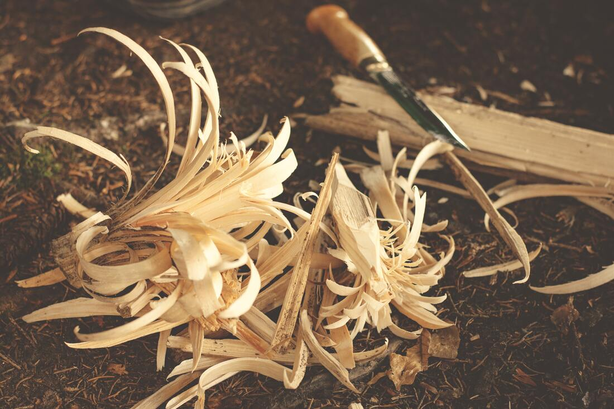

01 / BRAND
讓氣味
留住瞬間。
而花便是古時詩人寄情與此的典型代表，它可豔麗、可清新、可哀傷、可短暫，一如我們所要表達的氣味，而蝶之守護也讓我們記住也留住瞬間的永恆。

01 / BRAND
而花便是古時詩人寄情與此的典型代表，它可豔麗、可清新、可哀傷、可短暫，一如我們所要表達的氣味，而蝶之守護也讓我們記住也留住瞬間的永恆。
KEYNOTE
沉香在受傷後，經由自然作用形成。每一塊沉香的紋理、色澤與香氣皆有所不同，稀有而珍貴。


02 / CRAFT
由蝶漾香韻調香師親自監修設計，以木工工藝中難度極高的曲木技法，將一片樟木利用切割紋路的方式彎曲木頭纖維，做到可以重複開闔的書本樣式。
A QUIET TRACE OF TIME